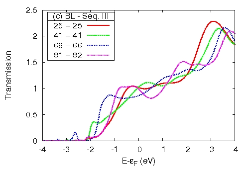

Atomistic NanoTransport
Example outputs



Transmission function or conductance of a series of Al (lower left) and Cu (lower right) nanocontacts of increasing atomic detail of the electrodes as shown in the upper panel.
Atomistic NanoTransport
